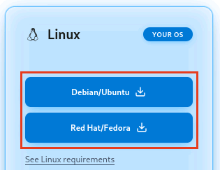
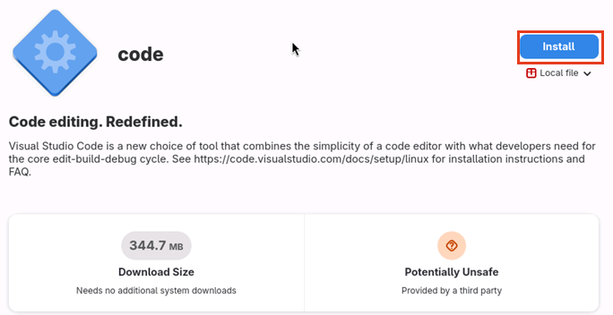
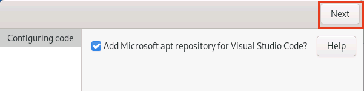

More setup help
The setup guide, START-HERE.md, keeps to the steps most people follow. This page holds the rest: what is different on Fedora and Debian, and the two other ways in, for a project you already have. Each part is linked from the step where it can come up.
Visual Studio Code on Fedora or Debian
On Fedora or Debian, this takes the place of App Center in step 2.
On Fedora or Debian: the window that adds programs, called Software, does not offer Visual Studio Code, so it comes from Microsoft's website instead. Press the Super key and click Firefox, the web browser, first in the row of icons along the bottom of the screen. Go to code.visualstudio.com and press Download at the top right of the page. On the page that opens, in the box marked Linux, press Red Hat/Fedora on Fedora, or Debian/Ubuntu on Debian.

Firefox shows the download in a small panel at its top right. When the panel says Completed, click the file's name, which begins with
code. Software opens on a page titled code, marked Local file: press Install. It may say Potentially Unsafe and Provided by a third party, which only means that the program comes from Microsoft rather than from Fedora or Debian.
A window titled Authentication Required asks for your password: type the one you use to sign in to this computer, and press Enter.
Also on Debian: about a minute later, a window titled Configuring code asks Add Microsoft apt repository for Visual Studio Code?, with its box ticked. Leave it ticked, so Visual Studio Code keeps itself up to date, and press Next at its top right. The install waits until you do.

When it is done, Debian's page shows Open: press it. Fedora's shows only Uninstall…: close the window, and open Visual Studio Code as item 5 of step 2 says.
A project you already have
These take the place of steps 5 and 6 when you are adding the starter to a project of your own. Steps 1 to 4 come first, as they are written.
- In Visual Studio Code, open the File menu and choose Open Folder, then find your project's folder, click it once, and press the button that confirms the choice. If Visual Studio Code asks whether you trust the files, or shows Restricted Mode, trust them as step 5 shows. You know this worked when your project's own files are listed on the left.
- Open the Claude panel, copy the message below exactly as it is, paste it into the box at the bottom, and press Enter.
I am adding App Architect to this project, which already exists. I am
not technical, so explain each step in plain words before you do it. Install
Git, GitHub's command line tool (gh), and Node.js for my user only, wherever
that is possible, if any of them is missing, and sign me in to GitHub through
the browser with a one-time code that you show me. Then clone App Architect
with "gh repo clone noelito-projects/app-architect" into a temporary folder
outside this project, never into it, and change nothing in this project yet.
Read starter-kit/library/skills/adopt-the-starter/SKILL.md in that clone
and follow it from its beginning: it says what to ask me and what to do, and
it keeps this project's own branches untouched until I say yes. I may want only
some parts of the starter, so show me its menu of features before bringing
anything in.What happens next: Claude asks you a few questions, one at a time, mostly to check that it understood what your project's own files already say, and shows you the menu so you can take all of the starter or only some parts. It then works in a second folder of its own beside your project's, so your project keeps working as it does now while the starter goes in, and it asks you before anything reaches your project's own work or GitHub. Adding the starter can take several sittings; you can stop at any point, and the next conversation picks up where the last one stopped.
Sending lessons from a project
This is for a project that keeps its own way of working, when you only want to pass on what it learned, so the next project made from the starter begins with it. Nothing is added to your project and nothing in it changes. Steps 1 to 4 come first, as they are written, then open your project's folder as the first step of a project you already have says, and send Claude this message:
I only want to send lessons from this project back to App Architect, and
nothing in this project may change. I am not technical, so explain each step in
plain words before you do it. Install Git, GitHub's command line tool (gh), and
Node.js for my user only, wherever that is possible, if any of them is missing,
and sign me in to GitHub through the browser with a one-time code that you show
me. Then clone App Architect with "gh repo clone
noelito-projects/app-architect" into a short temporary folder outside this
project, never into it. Read starter-kit/library/skills/gather-lessons/SKILL.md
in that clone and follow it from its beginning.What happens next: Claude says what it will read, and asks whether it may also read your past conversations with Claude about this project, which is where most lessons are. It then looks for what any project would want, the skills your project wrote above all, takes out every private detail, and shows you each lesson before anything is sent. You say yes or no to each one.